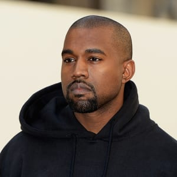

Most people don't realize it, but Pop music is the undercurrent to our daily lives. In the stores we shop at, on the radio channels preset in our cars, in hospitals, restaurants, etc., we are undergoing this same auditory experience. No one can say for sure whether this is a good thing or a bad thing. Being constantly exposed to the same music for weeks, or even months, on end is bound to frustrate us. Yet, despite how annoyed people get with hearing the same songs, they manage to stay on the top of the charts for weeks. For instance, Ed Sheeran's "Shape of You" stayed at the top of the Billboard chart for 33 weeks. Thoughts?

Rap is the most influential genre of music in the United States. From fashion to politics, Rap music and artists have an undeniable presence in this country. But is that influence really valid? Do rappers deserve to have the amount of power that they do in America? Childish Gambino's recent video release of "This is America" sparked national conversation and established newspapers such as the New York Times, Huffington Post, and Time, tried to figure out the messages hidden throughout the video. Called a "powerful rally cry against gun violence" by the nytimes, this song really called out America for all that Childish Gambino thinks it's doing wrong. Kanye West, 41 year old rapper/producer, has spoken his political views on television and through social media, resulting in outcries from his fans, supporters, and haters. His controversial statements regarding slavery have drawn out comments from political leaders and other influential figures across the world. But why? Since when does music intermingle with politics? Why do the words of rappers have such a large effect on the entire country, not just music fans? Food for thought.
